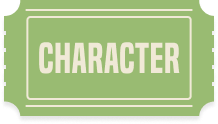

whiteface
When people think of “clowns”, this is usually the first of type clown that comes to mind.
It is the Whiteface clown that has both iconic and terrifying association. Due to the fear of clowns that developed in the 1980s, Whiteface clowns are not as common as they used to be. Features of this clown are a fully painted white face, exaggerated facial features, and colorful oversized clothing. They may wear a false nose or paint the tip of their nose.